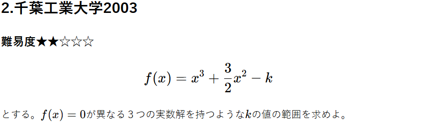

重要ポイント
定数を分離することで、 $$ y = k, y = x^3 + \frac{3}{2}x^2 $$ 即ち、ただの直線と三次関数のグラフの共有点の関係を考えればよくなる。
解説
\( f(x) = 0 \)とすると、
$$ x^3 + \frac{3}{2}x^2 - k = 0 $$
$$ x^3 + \frac{3}{2}x^2 = k $$
ここで左辺を、
$$ g(x) = x^3 + \frac{3}{2}x^2 $$
とする。
\( y = g(x) \)と\( y = k \)が異なる３つの実数解を持てばよい。
\( g(x) \)を微分すると、
$$ g'(x) = 3x^2 + 3x $$
$$ = 3x(x + 1) $$
従って以下の増減表が得られる。
| \(x\) | \( -1 \) | \( 0 \) | |||
|---|---|---|---|---|---|
| \( g'(x) \) | + | 0 | - | 0 | + |
| \( g(x) \) | ↗ | \( f(-1) \) | ↘ | \( f(0) \) | ↗ |
 グラフから、\( y = g(x) \)と\( y = k \)が３つの異なる共有点を持つとき、
$$ 0 < k < \frac{1}{2} $$
グラフから、\( y = g(x) \)と\( y = k \)が３つの異なる共有点を持つとき、
$$ 0 < k < \frac{1}{2} $$
全体まとめ
異なる3つの実数解を持つときの定数の範囲を考える問題。考えるべきは、
$$ 定数分離→グラフ $$
これは実数解の数が何個だろうと変わらない。
定数分離をする理由は、
$$ 複雑な曲線の固定とグラフの単純化 $$
である。定数分離をすると大抵は、固定された曲線と直線の共有点の数 を考えればよくなるので、
より直感的に理解することができる。
定数分離をしなくても解くことは可能。これもやはりグラフ的に考えることになる。三次関数が異なる３つの実数解を持つとき、
$$ (極大値) > 0 , (極小値) < 0 $$
を満たせばよい。これは簡単な三次関数のグラフなので考えやすいが、複雑な関数のときはグラフを描くことも難しくなるので定数分離することをお勧めする。